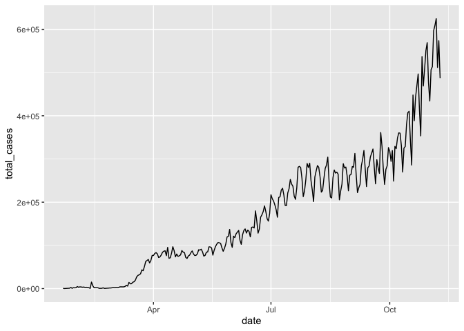

Lesson 13: Data import, export, and conversion between data types
Readings
Required:
- Chapter 3: Data types and objects in Modern R with the tidyverse by Bruno Rodrigues
- Chapters 10, 11, 14.1 + 14.2, 15.1 + 15.2 and 16 in R for Data Science by Hadley Wickham & Garrett Grolemund [That sounds like a lot, but all the sections are pretty short and contain important information. Chapters 10 and 11 are the most essential if you don’t have time to read them all]
Other resources:
- The rest of Chapters 14-16 in R for Data Science by Hadley Wickham & Garrett Grolemund
Plan for today and learning objectives
First we’ll wrap up our section on relational data, including filtering functions.
Then we’ll revisit the notion of tidy data and go over some basics related to data import and parsing of different data types.
Loading libraries
library(tidyverse)## ── Attaching packages ───────────────────────────── tidyverse 1.3.0 ──## ✓ ggplot2 3.2.1 ✓ purrr 0.3.3
## ✓ tibble 2.1.3 ✓ dplyr 0.8.3
## ✓ tidyr 1.0.0 ✓ stringr 1.4.0
## ✓ readr 1.3.1 ✓ forcats 0.4.0## ── Conflicts ──────────────────────────────── tidyverse_conflicts() ──
## x dplyr::filter() masks stats::filter()
## x dplyr::lag() masks stats::lag()
Relational data
We’ll review how to define the key columns for mutating joins and then we’ll discuss filtering joins with the semi_join() and anti_join() functions.
Optional exercises (from the R for Data Science chapter)
Once you have given each exercise a try, you can check the solutions here
R4DS exercise 13.4.1: Compute the average delay by destination, then join on the
airportsdata frame so you can show the spatial distribution of delays. Here’s an easy way to draw a map of the United States:library(maps) #install.packages("maps") airports %>% semi_join(flights, c("faa" = "dest")) %>% ggplot(aes(lon, lat)) + borders("state") + geom_point() + coord_quickmap()(Don’t worry if you don’t understand what
semi_join()does — you’ll learn about it next.)You might want to use the
sizeorcolourof the points to display the average delay for each airport.
- R4DS exercise 13.4.2: Add the location of the origin and destination (i.e. the
latandlon) toflights.
- R4DS exercise 13.4.3: Is there a relationship between the age of a plane and its delays?
Data import
Reading data into RStudio
In lesson 10, we introduced some of the most commonly used readr data import functions, such as read_csv(), read_tsv(), and read_delim(). Let’s revisit these to import Jenny Bryan’s Lord of the Rings Data that we’ve used in several previous lessons.
We can import directly from Jenny’s GitHub page:
lotr_tidy <- read_csv("https://raw.githubusercontent.com/jennybc/lotr-tidy/master/data/lotr_tidy.csv")## Parsed with column specification:
## cols(
## Film = col_character(),
## Race = col_character(),
## Gender = col_character(),
## Words = col_double()
## )Or we can use import it from a copy saved on our local computer
lotr_tidy <- read_csv("../datasets/lotr_tidy.csv")## Parsed with column specification:
## cols(
## Film = col_character(),
## Race = col_character(),
## Gender = col_character(),
## Words = col_double()
## )read_csv() uses the first line of the data for the column names, which is a very common convention. We can play around with tweaking our local copy of the data file to make use of the options for tweaking this behavior. For example, if there are a few lines of metadata at the top of the file, we can use skip = n to skip the first n lines; or use comment = "#" to drop all lines that start with (e.g.) #. When the data do not have column names, we can use col_names = FALSE to tell read_csv() not to treat the first row as headings, and instead label them sequentially from X1 to Xn.
Why use the tidyverse/readr import functions instead of base-R?
From R4DS
If you’ve used R before, you might wonder why we’re not using read.csv(). There are a few good reasons to favour readr functions over the base equivalents:
They are typically much faster (~10x) than their base equivalents. Long running jobs have a progress bar, so you can see what’s happening. If you’re looking for raw speed, try data.table::fread(). It doesn’t fit quite so well into the tidyverse, but it can be quite a bit faster.
They produce tibbles, they don’t convert character vectors to factors, use row names, or munge the column names. These are common sources of frustration with the base R functions.
They are more reproducible. Base R functions inherit some behaviour from your operating system and environment variables, so import code that works on your computer might not work on someone else’s.
Parsing different data types
As we saw above, when we run read_csv(), it prints out a column specification that gives the name and type of each column.
The following section is borrowed from R4DS Chapter 11.4
readr uses a heuristic to figure out the type of each column: it reads the first 1000 rows and uses some (moderately conservative) heuristics to figure out the type of each column.
The heuristic tries each of the following types, stopping when it finds a match:
- logical: contains only “F”, “T”, “FALSE”, or “TRUE”.
- integer: contains only numeric characters (and -).
- double: contains only valid doubles (including numbers like 4.5e-5).
- number: contains valid doubles with the grouping mark inside.
- time: matches the default time_format.
- date: matches the default date_format.
- date-time: any ISO8601 date.
If none of these rules apply, then the column will stay as a vector of strings.
Trying the guess the variable type from the first 1000 lines of data works for a majority of datasets. But it doesn’t always work for larger data files. There are two basic problems:
The first thousand rows might be a special case, and readr guesses a type that is not sufficiently general. For example, you might have a column of doubles that only contains integers in the first 1000 rows.
The column might contain a lot of missing values. If the first 1000 rows contain only NAs, readr will guess that it’s a logical vector, whereas you probably want to parse it as something more specific.
readr contains a challenging CSV that illustrates both of these problems:
challenge <- read_csv(readr_example("challenge.csv"))## Parsed with column specification:
## cols(
## x = col_double(),
## y = col_logical()
## )## Warning: 1000 parsing failures.
## row col expected actual file
## 1001 y 1/0/T/F/TRUE/FALSE 2015-01-16 '/Library/Frameworks/R.framework/Versions/3.6/Resources/library/readr/extdata/challenge.csv'
## 1002 y 1/0/T/F/TRUE/FALSE 2018-05-18 '/Library/Frameworks/R.framework/Versions/3.6/Resources/library/readr/extdata/challenge.csv'
## 1003 y 1/0/T/F/TRUE/FALSE 2015-09-05 '/Library/Frameworks/R.framework/Versions/3.6/Resources/library/readr/extdata/challenge.csv'
## 1004 y 1/0/T/F/TRUE/FALSE 2012-11-28 '/Library/Frameworks/R.framework/Versions/3.6/Resources/library/readr/extdata/challenge.csv'
## 1005 y 1/0/T/F/TRUE/FALSE 2020-01-13 '/Library/Frameworks/R.framework/Versions/3.6/Resources/library/readr/extdata/challenge.csv'
## .... ... .................. .......... ............................................................................................
## See problems(...) for more details.There are two printed outputs: the column specification generated by looking at the first 1000 rows, and the first five parsing failures. It’s always a good idea to explicitly pull out the problems(), so you can explore them in more depth:
problems(challenge)## # A tibble: 1,000 x 5
## row col expected actual file
## <int> <chr> <chr> <chr> <chr>
## 1 1001 y 1/0/T/F/TRUE/… 2015-01… '/Library/Frameworks/R.framework/Version…
## 2 1002 y 1/0/T/F/TRUE/… 2018-05… '/Library/Frameworks/R.framework/Version…
## 3 1003 y 1/0/T/F/TRUE/… 2015-09… '/Library/Frameworks/R.framework/Version…
## 4 1004 y 1/0/T/F/TRUE/… 2012-11… '/Library/Frameworks/R.framework/Version…
## 5 1005 y 1/0/T/F/TRUE/… 2020-01… '/Library/Frameworks/R.framework/Version…
## 6 1006 y 1/0/T/F/TRUE/… 2016-04… '/Library/Frameworks/R.framework/Version…
## 7 1007 y 1/0/T/F/TRUE/… 2011-05… '/Library/Frameworks/R.framework/Version…
## 8 1008 y 1/0/T/F/TRUE/… 2020-07… '/Library/Frameworks/R.framework/Version…
## 9 1009 y 1/0/T/F/TRUE/… 2011-04… '/Library/Frameworks/R.framework/Version…
## 10 1010 y 1/0/T/F/TRUE/… 2010-05… '/Library/Frameworks/R.framework/Version…
## # … with 990 more rowsA good strategy is to work column by column until there are no problems remaining. Here we can see that there are a lot of parsing problems with the y column. If we look at the last few rows, you’ll see that they’re dates stored in a character vector.
That suggests we need to use a date parser instead. To fix the call, start by copying and pasting the column specification into your original call:
challenge <- read_csv(
readr_example("challenge.csv"),
col_types = cols(
x = col_double(),
y = col_logical()
)
)## Warning: 1000 parsing failures.
## row col expected actual file
## 1001 y 1/0/T/F/TRUE/FALSE 2015-01-16 '/Library/Frameworks/R.framework/Versions/3.6/Resources/library/readr/extdata/challenge.csv'
## 1002 y 1/0/T/F/TRUE/FALSE 2018-05-18 '/Library/Frameworks/R.framework/Versions/3.6/Resources/library/readr/extdata/challenge.csv'
## 1003 y 1/0/T/F/TRUE/FALSE 2015-09-05 '/Library/Frameworks/R.framework/Versions/3.6/Resources/library/readr/extdata/challenge.csv'
## 1004 y 1/0/T/F/TRUE/FALSE 2012-11-28 '/Library/Frameworks/R.framework/Versions/3.6/Resources/library/readr/extdata/challenge.csv'
## 1005 y 1/0/T/F/TRUE/FALSE 2020-01-13 '/Library/Frameworks/R.framework/Versions/3.6/Resources/library/readr/extdata/challenge.csv'
## .... ... .................. .......... ............................................................................................
## See problems(...) for more details.Then you can fix the type of the y column by specifying that y is a date column:
challenge <- read_csv(
readr_example("challenge.csv"),
col_types = cols(
x = col_double(),
y = col_date()
)
)
tail(challenge)## # A tibble: 6 x 2
## x y
## <dbl> <date>
## 1 0.805 2019-11-21
## 2 0.164 2018-03-29
## 3 0.472 2014-08-04
## 4 0.718 2015-08-16
## 5 0.270 2020-02-04
## 6 0.608 2019-01-06There are a few other general strategies to help you parse files:
In the previous example, we just got unlucky: if we look at just one more row than the default, we can correctly parse in one shot:
challenge2 <- read_csv(readr_example("challenge.csv"), guess_max = 1001)## Parsed with column specification:
## cols(
## x = col_double(),
## y = col_date(format = "")
## )You might have noticed that readr needed a little help with variable type parsing when we’ve been reading in our coronavirus dataset
coronavirus <- read_csv('https://raw.githubusercontent.com/RamiKrispin/coronavirus/master/csv/coronavirus.csv')## Parsed with column specification:
## cols(
## date = col_date(format = ""),
## province = col_logical(),
## country = col_character(),
## lat = col_double(),
## long = col_double(),
## type = col_character(),
## cases = col_double()
## )## Warning: 67097 parsing failures.
## row col expected actual file
## 54792 province 1/0/T/F/TRUE/FALSE Alberta 'https://raw.githubusercontent.com/RamiKrispin/coronavirus/master/csv/coronavirus.csv'
## 54793 province 1/0/T/F/TRUE/FALSE Alberta 'https://raw.githubusercontent.com/RamiKrispin/coronavirus/master/csv/coronavirus.csv'
## 54794 province 1/0/T/F/TRUE/FALSE Alberta 'https://raw.githubusercontent.com/RamiKrispin/coronavirus/master/csv/coronavirus.csv'
## 54795 province 1/0/T/F/TRUE/FALSE Alberta 'https://raw.githubusercontent.com/RamiKrispin/coronavirus/master/csv/coronavirus.csv'
## 54796 province 1/0/T/F/TRUE/FALSE Alberta 'https://raw.githubusercontent.com/RamiKrispin/coronavirus/master/csv/coronavirus.csv'
## ..... ........ .................. ....... ......................................................................................
## See problems(...) for more details.
What is the problem here?
It will only load properly if we specify that the province column does not contain logicals but is character vector:
coronavirus <- read_csv('https://raw.githubusercontent.com/RamiKrispin/coronavirus/master/csv/coronavirus.csv', col_types = cols(province = col_character()))
Converting between data types
Parsing numbers
It seems like it should be straightforward to parse a number, but three problems make it tricky:
People write numbers differently in different parts of the world. For example, some countries use . in between the integer and fractional parts of a real number, while others use ,.
Numbers are often surrounded by other characters that provide some context, like “$1000” or “10%”.
Numbers often contain “grouping” characters to make them easier to read, like “1,000,000”, and these grouping characters vary around the world.
To address the first problem, readr has the notion of a “locale”, an object that specifies parsing options that differ from place to place. When parsing numbers, the most important option is the character you use for the decimal mark. You can override the default value of . by creating a new locale and setting the decimal_mark argument:
parse_double("1.23")## [1] 1.23parse_double("1,23", locale = locale(decimal_mark = ","))## [1] 1.23readr’s default locale is US-centric, because generally R is US-centric (i.e. the documentation of base R is written in American English). An alternative approach would be to try and guess the defaults from your operating system. This is hard to do well, and, more importantly, makes your code fragile: even if it works on your computer, it might fail when you email it to a colleague in another country.
parse_number() addresses the second problem: it ignores non-numeric characters before and after the number. This is particularly useful for currencies and percentages, but also works to extract numbers embedded in text.
parse_number("$100")## [1] 100parse_number("20%")## [1] 20parse_number("It cost $123.45")## [1] 123.45The final problem is addressed by the combination of parse_number() and the locale as parse_number() will ignore the “grouping mark”:
# Used in America
parse_number("$123,456,789")## [1] 123456789# Used in many parts of Europe
parse_number("123.456.789", locale = locale(grouping_mark = "."))## [1] 123456789# Used in Switzerland
parse_number("123'456'789", locale = locale(grouping_mark = "'"))## [1] 123456789
Dates
Dates can be tricky! If you work with date data, I suggest you review chapters 11.3.4 and 16 in R4DS.
Converting between data types with parse_x() functions
We can use the parse_x() functions in combination with mutate() to clean up values in a variable. Let’s have a look at how to clean up this dataset:
mess = read_tsv("https://raw.githubusercontent.com/nt246/NTRES6940-data-science/master/datasets/messy_data.tsv", locale = locale(decimal_mark = ","))## Parsed with column specification:
## cols(
## item = col_character(),
## price = col_character(),
## size = col_double()
## )# What happens if we run this without the locale argument?Let’s clean up the price column
mess %>%
mutate(price = parse_number(price))## # A tibble: 3 x 3
## item price size
## <chr> <dbl> <dbl>
## 1 a 45 3.5
## 2 b 5 2.7
## 3 c 3 2.9
Data export
readr also comes with two useful functions for writing data back to disk: write_csv() and write_tsv(). Both functions increase the chances of the output file being read back in correctly and also let’s you save dataframes with less typing than you often would need to e.g. avoid rownames or quotes with the base-R function write.table()
Let’s look at an example. Say we wanted to save a summary we had generated a few week ago of the coronavirus data:
coronavirus %>%
filter(type == "confirmed") %>%
group_by(date) %>%
summarize(total_cases = sum(cases)) %>%
write_csv(path = "../datasets/daily_casecount.csv")We also briefly talked about how to save plots a few classes ago. To recap here:

Slide from Jenny Bryan’s ggplot tutorial https://github.com/jennybc/ggplot2-tutorial
Use ggsave()
coronavirus %>%
filter(type == "confirmed") %>%
group_by(date) %>%
summarize(total_cases = sum(cases)) %>%
ggplot(mapping = aes(x = date, y = total_cases)) +
geom_line()
ggsave(filename = "../img/daily_casecounts_plot.png")## Saving 7 x 5 in image